BL·GL 다정·순애 캐릭터 웹툰 추천 TOP 30
BL·GL 작품 중에서 직진남, 다정남, 대형견남, 순정남 같은 요소가 들어간 작품만 골랐어요. 네이버웹툰·카카오웹툰·레진코믹스에서 조건에 맞는 작품 30개 중 인기 순으로 30개를 골랐어요. 인기 TOP 3: 사랑은 환상! ~슈퍼스타~, 소꿉친구의 가이드가 되었다 [연재], 지상낙원의 부적응자
2026-09-30 기준 · 성인 작품 제외
내 취향으로 더 좁혀서 추천받기 →-
1
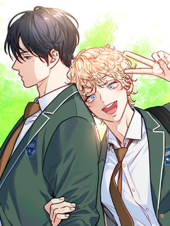
레진코믹스사랑은 환상! ~슈퍼스타~
혜성과 도진의 아들인 '박별' 은 예전에는 아이돌 연습생이었으나 현재는 그만두고 평범한 고등학교 생활을 보내고 있다. 갑작스럽게 동생이 생겨 혼란스러운 와중에, 별은 한동안 소원해졌던 소꿉친구 '시우'가 자꾸만 눈에 밟히게 되는데.. 꿈과 우정(?)을 찾는 별이의 반짝반짝 하이틴 성장…
BL·GL순정남월드드랍WorldDrop학원물레진코믹스에서 보기 → -
2
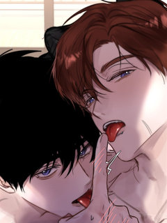
레진코믹스소꿉친구의 가이드가 되었다 [연재]
하룻밤으로 D급 가이드에서 S급 가이드가 되었다. 만년 D급 가이드 조이현. 쌍둥이 소꿉친구들이자 A급 에스퍼인 정한세와 정한결의 그늘에 가려져 살다가 단 하룻밤으로 S급 가이드가 되다?!
BL·GL다정남대형견남연하남순진수레진코믹스에서 보기 → -
3
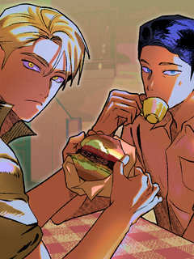
레진코믹스지상낙원의 부적응자
플로리다에 머무른지 3년째인데도 영어를 못 하는 괴짜 이탈리안 살보 비갈리. 그는 세계적인 작가임에도 호텔 대신 플로리다의 낡은 모텔에서 누군가를 기다리며 말라가고 있다. 고향 시칠리를 그리워하던 살보는 순전히 고향의 억양을 쓴단 이유로 처음 만난 건달 청소부 벤을 자신의 조수 겸 영…
BL·GL연하남까칠수혐관연상수레진코믹스에서 보기 → -
4레진코믹스
늑대가 날 책임지겠대 [연재]
어릴 적 수인에게 강제로 마킹 당한 유재이는 발정기와 페로몬 때문에 늘 괴로워하며 살아왔다. 성인이 된 어느날, 한 마리 늑대 수인— 이건우가 갑자기 나타나 자신이 모든 걸 책임지겠다며 유재이를 찾아온다. 하지만 유재이는 단번에 알아본다. 그가 바로 자신의 꿈속에 계속 나타나 자신을…
BL·GL대형견남미인수기억상실덩치케미레진코믹스에서 보기 → -
5레진코믹스
다니엘의 인어 [연재]
인어 연구에 진심인 다니엘은 첫 답사에서 포획한 인어가 자신을 유혹하는 듯한 느낌을 받는다. 순수한 호기심에 인어에게 다가가지만, 다니엘을 기다리고 있는 건 위험천만한 소유욕과 달콤 쌉싸름한 집착뿐이었다.
BL·GL순정남인외존재유혹공기억상실레진코믹스에서 보기 → -
6
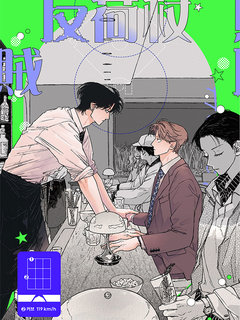
레진코믹스적반하장의 허슬플레이
자신의 모교가 있는 지방으로 전근을 간 '강예솔'은 '스플리터'라는 바의 사장 '정한림'을 만난다. 바에서 정신없이 술을 마신 예솔은 다음 날 아침 한림의 집에서 깨어나고 자신이 남자와 잤다는(?) 사실에 기겁하며 도망친다. 무척 중요한 USB를 잃어버린 걸 깨달은 예솔은 어쩔 수 없…
BL·GL연하남능글수무심공미남공레진코믹스에서 보기 → -
7
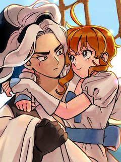
레진코믹스안개 바다 위의 샤베트
[5회 연재 후 1회 정기휴재] 구혼자를 만나기 위해 '샤베트'는 유람선에 올라 뱃길을 떠납니다. 출항 후 순식간에 안개가 배를 둘러싸지만, \\
BL·GL순정녀상처녀서양GL레진코믹스에서 보기 → -
8
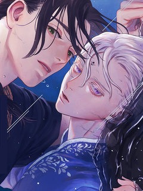
레진코믹스[from RED] 새벽의 노래
그 섬에는 검은 바다에서 나오는 괴물과 싸워 사람들을 지키는 칸나기가 있었다. 저주로 인해 13살 모습 그대로 성장이 멈춘 몸으로 외롭게 싸우는 칸나기의 이름은 엘바. 그런 엘바의 신상을 알게 된 소년 알토는 조금이라도 도움이 되고자 아무도 가까이하지 않던 엘바를 찾아다니며 시중을 들…
BL·GL헌신남연하남능력수미인수레진코믹스에서 보기 → -
9레진코믹스
내 매니저를 소개합니다 [개정판][연재]
천사 같은 외모의 대한민국 톱배우, 지현. 지현에게는 7년 동안 자신의 곁을 지키는 매니저, 은호가 있다. 섬세한 외모만큼이나 까다로운 성격인 지현의 예외이자 '유일한 존재'인 곽은호가. 그런 은호에게는 한 가지 비밀이 있다. 바로 친구이자 자신의 배우인 지현을 남몰래 짝사랑하고 있다…
BL·GL순정남짝사랑다정수미남수레진코믹스에서 보기 → -
10
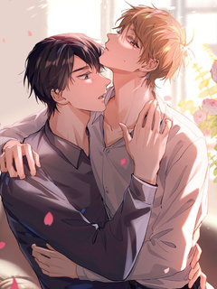
레진코믹스너의 페로몬이 좋아 [연재]
외모, 집안, 어느 것 하나 빠지지 않던 베타 윤가람! 갑자기 오메가가 되었다...?! 계속되는 이상증세에 꼬여 드는 알파까지 빠르게 지쳐가는데... 이상하게 오윤 앞에서는 아무렇지 않다. 같은 알파인데, 오윤은 뭐가 다른 거지? 윤가람은 오메가의 삶에 적응할 수 있을까?
BL·GL다정남친구>연인짝사랑성장물레진코믹스에서 보기 → -
11레진코믹스
석류를 삼킨 뱀 [개정판][연재]
대륙에서 가장 부유하고 광활한 땅 ‘트라스타사’는 전능한 신 아몬과 그의 반려 나인이 다스린다. 완벽한 낙원처럼 보이는 아름답고 화려한 신전과, 나인에겐 한없이 다정한 불로불사의 신 아몬. 하지만… \\
BL·GL대형견남다정수상처수미남공레진코믹스에서 보기 → -
12
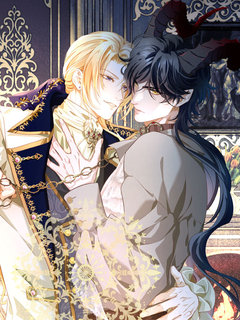
레진코믹스황태자의 용으로 태어났다 [연재]
장래 유망한 대학생인 나, 강찬영은 누군가에게 의문의 죽임을 당한 뒤 <황태자와 드래곤>이라는 게임 속 인물로 환생했다. 정확히 말하면 황태자에게 처치당할 운명인 보스, 검은 드래곤 '인페르노’로! 이제부터 내 목표는 운명을 바꾸는 거다. 그런데- “황태자님, 이거 스토리랑 뭔가 다르…
BL·GL다정남빙의설렘폭발궁중로맨스레진코믹스에서 보기 → -
13
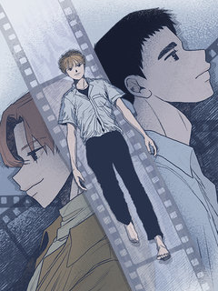
레진코믹스여섯자의 소년 [개정판]
안락사가 보편화된 근미래. 스물넷의 주인공 다루는 스스로의 선택 아래 죽기 위해 안락사를 신청한다. 생전의 기억을 거슬러보는 최종 수면 단계까지 거치면 원하는 끝을 맺게 되는 안락사. 하지만 다루가 꿈 속에서 마주친 것은 꺼내기 힘든 기억, 친구 '이탄'과의 추억이었다.
BL·GL다정남상처수SF삼각관계레진코믹스에서 보기 → -
14
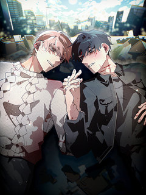
레진코믹스11번째 수학여행 [연재]
[4회 연재 후 1회 정기 휴재] 이능력을 가진 학생들만이 다니는 신해 고등학교의 2학년 가준과 선우. 수학여행을 가기 위해 잠깐 정차한 휴게소에서 버스를 놓친 두 사람은 우여곡절 끝에 다시 버스에 올라타고, 꺼림칙한 기분으로 수련원으로 향한다. 드디어 도착한 수련원에서 마주한 건 수…
BL·GL다정남대형견남구원서사무심수레진코믹스에서 보기 → -
15레진코믹스
페이트 메이트 [개정판][연재]
알파인 동시에 오메가인 특이형질 때문에 베타 전용 기숙사에 입소하게 된 세현. 깔끔하고 싹싹한 룸메이트 준후를 만나 운이 좋다고 생각하고 있었는데... 준후도 자신처럼 형질을 숨기고 베타 기숙사에 들어온 것임을 알게 된다. 심지어 준후의 형질은 알파?! 오메가 형질이 불안정한 세현은…
BL·GL다정남연하남외유내강수연상수레진코믹스에서 보기 → -
16
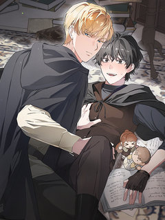
레진코믹스빙의한 소설의 분위기가 위기 [연재]
[4회 연재 후 1회 휴재] 친누나가 쓴 소설에 빙의하게 된 ‘나’. 그런데… 소설의 분위기가 조금 이상하다?! 사고로 죽은 누나가 평소에 쌓은 덕으로 인해, 단 하나의 소원을 이룰 수 있게 된 ‘나’는 누나가 가장 아끼던 인물로 살아 보고 싶다는 소원을 빈다. 그런데 내가 악역인 ‘…
BL·GL순정남연하남까칠공허당수레진코믹스에서 보기 → -
17
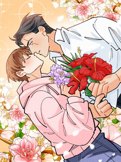
레진코믹스가든플로라 [개정판][연재]
[해당 작품은 <가든플로라>의 일부 장면을 편집한 15세 개정판입니다.] #조폭공 #개과천선공 #꽃집사장공 #막무가내수 #연하직진수 #짝사랑수 “나가. 영업 방해하지 말고.” “내가 그동안 아저씨 찾느라 얼마나 고생했는데!!!\\
BL·GL다정남능글남계략남귀염수레진코믹스에서 보기 → -
18
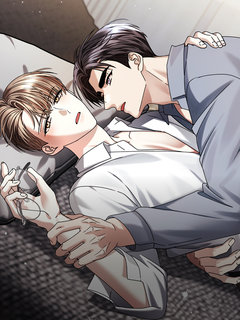
레진코믹스유통기한 [개정판][연재]
서인은 대학에서 만난 동갑인 애인인 기태가 있다. 기태에겐 오랜 절친 무영이 있었고, 무영에겐 연하의 애인인 민호가 있었다. 기태와 무영은 각자의 애인이 있지만 오랜 인연으로 단단하게 엮여 있었고, 서인과 민호는 그 안으로 쉽게 들어가지 못했다. 서인과 민호 둘다 어색하고 불편해도 사…
BL·GL다정남연하남미남공연상수레진코믹스에서 보기 → -
19
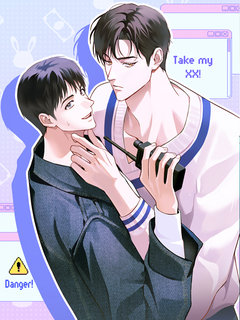
레진코믹스이자율 50% [개정판][연재]
[매월 10, 20, 30일 연재] 신인 감독 이서림은 최근 골머리를 앓고 있다. 요즘 가장 잘나가는 인기 배우 이선오가 서림의 작품에 캐스팅된 이후 작품 활동에 전혀 참여하지 않고 있기 때문. 이대로라면 투자뿐만 아니라 제작까지 무산될 위기인데... 하지만 서림에겐 비장의 카드가 있…
BL·GL순정남현대물미남공재회레진코믹스에서 보기 → -
20
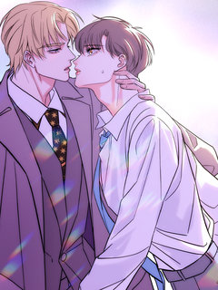
레진코믹스저렴한 남자 [연재]
한성준을 자신과 아버지를 찾으러 온 자신의 형 임연에게 접근한다. 그는 집착이 강한 성격으로 임연을 자기것으로 만들기 위해 그를 자신의 침대로 데려간다. 남들이 보기에는 전형적인 나쁜남자 처럼 보이는 한성준이지만 임연에게는 이상할 정도로 순애보를 보이고, 나약하고 가여운 외모의 임연은…
BL·GL다정남신분차이오해/착각미남공레진코믹스에서 보기 → -
21레진코믹스
테소로 오브 더 가이드 [개정판][연재]
이능력자 폭주율이 높기로 소문이 자자한 F12 센터. 그곳으로 발령받게 된 진단 검사관 '백시진'. 첫 출근한 시진은 행정과라며 신분을 숨긴 채, 의도적으로 접근한 A급 가이드 '정태율'을 만나게 된다. \\
BL·GL순정남연하남강공연상수레진코믹스에서 보기 → -
22
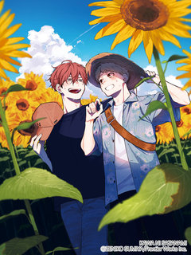
레진코믹스[비애] 강에 잔물결
탄바와 우타가와는 연인 사이. 10년 이상이나 함께 있으면서도, 자신의 남자친구가 너무 멋있어서 감당이 안 되는 우타가와. 한편 탄바는, 한없이 퓨어한 우타가와가 가끔씩 보이는 갭에 푹 빠진 상태. 사소한 일에도 두근거리고, '좋아한다'는 마음은 논스톱으로 상승 중! pixiv에서 대…
BL·GL다정남헌신남헌신수적극수레진코믹스에서 보기 → -
23
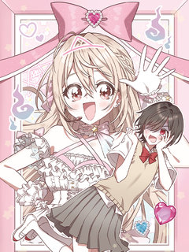
레진코믹스다 보이는데요! 아이자와 양
신경쓰이는 그 아이는 전 아이돌 ……이자 유령?! 옛날부터 유령을 볼 수 있었던 쿠로토리 미치는 최대한 엮이지 않도록 보이지 않는 척해왔다. 하지만 생전 인기 아이돌이었던 유령, 아이자와 호나미가 교실에 나타나게 된 뒤부터 일상에 변화를 맞이하게 되고?! 호나미의 열렬한 팬 서비스(?…
BL·GL다정녀로맨틱코미디오컬트소심녀레진코믹스에서 보기 → -
24
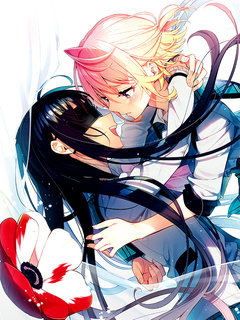
레진코믹스아네모네는 열을 머금고
너를 좋아하게 되고 싶어. 원치 않았던 사립 고등학교로 진학을 하게 된 나기사가 만난 병약 미소녀 마시로. 분명 처음 만났다고 생각했던 그녀는 나기사의 입시를 망친 원인이라 할 수 있는 소녀였다. 자기 자신을 바꾸기 위해, 나기사는 마시로를 ‘좋아’하게 되겠다 결심을 하는데.
BL·GL순애남학원물GL레진코믹스에서 보기 → -
25
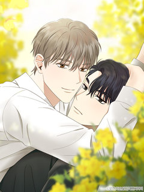
레진코믹스올 어바웃 유어 러브 [개정판][연재]
오랜만에 나간 동창회에서 이원은 전 여자친구의 청첩장을 받는다. 복잡한 마음인 이원 앞에 나타난 태은은 갑자기 그에게 원나잇 제안을 한다. 얼떨결에 태은과 자게 된 이원은 그 후로도 태은과 밤을 보내게 되고, 함께하는 시간이 길어질 수록 태은에 대한 호기심은 더욱 커진다. 같은 학교에…
BL·GL다정남대형견남순정남BL레진코믹스에서 보기 → -
26레진코믹스
찬란한 어둠 [개정판][연재]
[매월 5,15,25일 연재 / 5화 연재 후 1회 정기 휴재] 불우한 성장기를 극복하고서 천재 바이올리니스트로 세계에 이름을 알린 정난우. 그는 겹겹이 쌓인 내면의 어둠을 벗어나지 못하여 힘들어한다. 할리우드 미남 배우이자 바람둥이로 소문난 에녹 밀리건. 그는 매력적인 얼굴 외에 연…
BL·GL다정남헌신남설렘폭발미인수레진코믹스에서 보기 → -
27
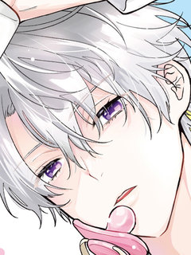
레진코믹스악역 영식으로 전생했지만, 소꿉친구의 엄마♂가 되겠어!
BL 소설 속 세계에, 처형 엔딩이 확정인 불쌍한 악역 영식으로 환생한 미카(전생은 동인남). 죽음을 피하기 위해 미카는 소설의 메인 캐릭터이자 소꿉친구인 샤를을, 건전한 완벽 동정남인 채로 자라도록 '엄마' 역할을 하며 키우기로 결심한다! 그렇게 필사적인 교육 덕분에 샤를은 건강하고…
BL·GL다정남판타지BL캠퍼스레진코믹스에서 보기 → -
28
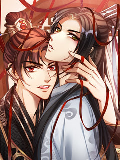
레진코믹스신복(臣僕) [연재]
황제가 중병에 걸렸으나, 슬하에 자식이 없어 황족 중 가장 기초가 없는 아이를 태자로 세웠다. 이에 10살 서승재는 태자가 됐고, 안기연은 태부가 되어, 태자에게 나라와 백성을 다스리는 법을 가르쳤다. 서승재는 점점 안기연에게 의존하게 되었고, 의존하던 마음은 변질되어 자신을 돌봐주던…
BL·GL연하남미인수궁중로맨스짝사랑레진코믹스에서 보기 → -
29
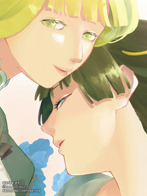
레진코믹스실프의 꽃 공주
『정령의 아이』로서 백성들에게 사랑받는 바람의 나라의 황녀 나탈리아. 하지만 나탈리아는 가족을 잃은 슬픔 탓에 왕가의 검을 버팀목으로 삼아 의존하고 있었다. 그런 나탈리아 앞에 명랑하고 엉뚱한 구석이 있는수녀 사라가 나타나고…. 사라는 수녀로서 도움을 주고 싶어서 나탈리아의 곁에 있겠…
BL·GL순애남이세계GL판타지레진코믹스에서 보기 → -
30
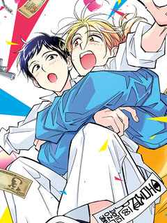
레진코믹스어차피 죽을 거라면 키스나 할래!
우당탕탕 데드 OR 러브♥♥♥♥♥♥♥♥ 온갖 고난으로 가까워지는 두 사람……?! 금세 사랑에 빠지는 남자 카네마루의 현재의 사랑의 타깃은 단골 중화요리 가게에서 알바 중인 유학생 리우였다. 우연히 둘만 가게에 남게 되어 고백하려고 마음먹는데, 느닷없이 강도단이 습격을?! 분위기만 잡을…
BL·GL다정남대형견남문란공성실수레진코믹스에서 보기 →